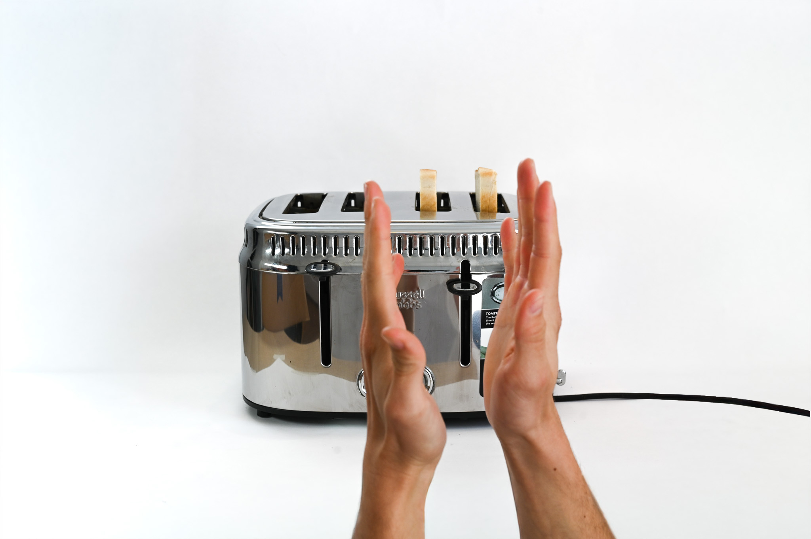
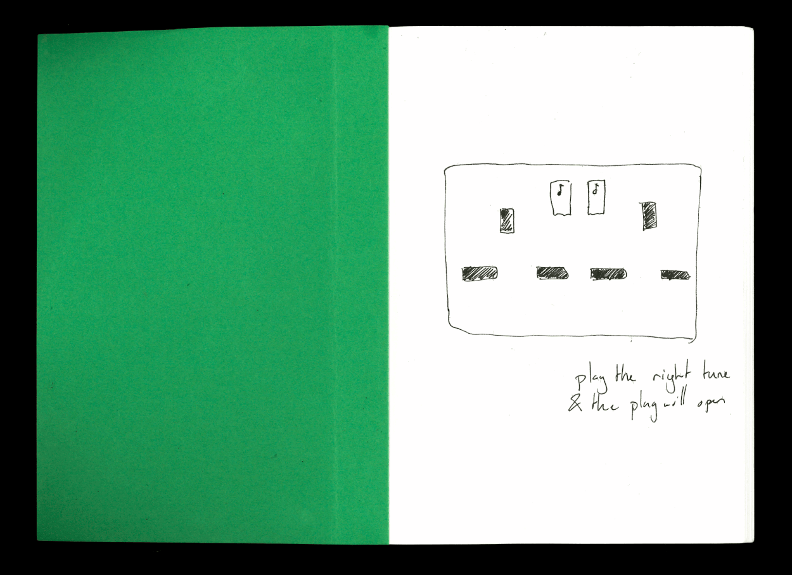
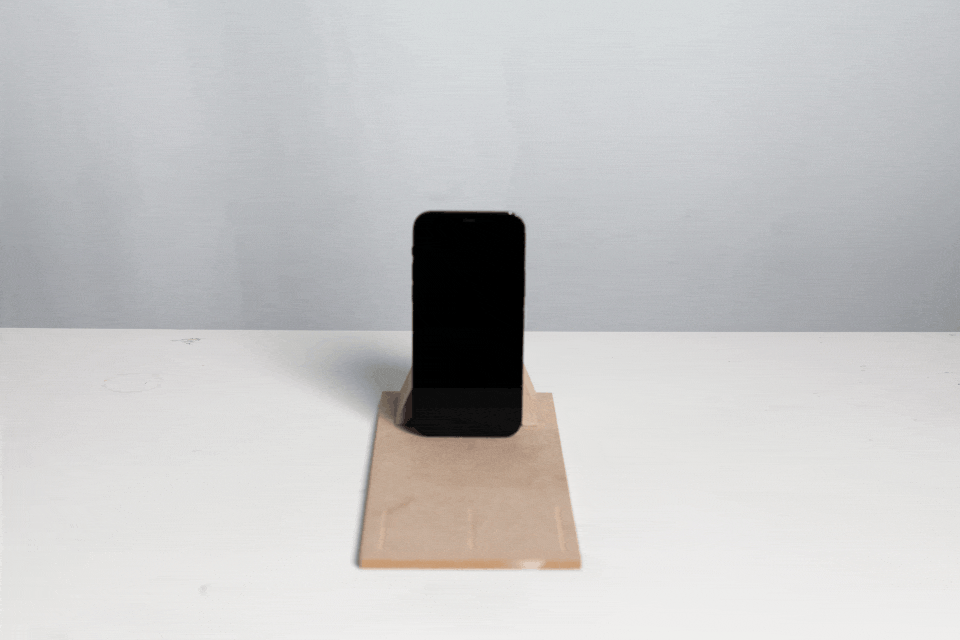
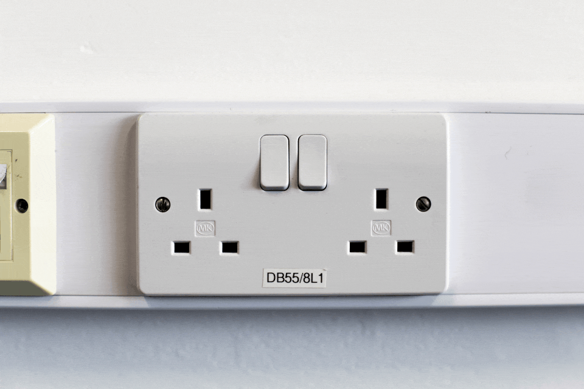
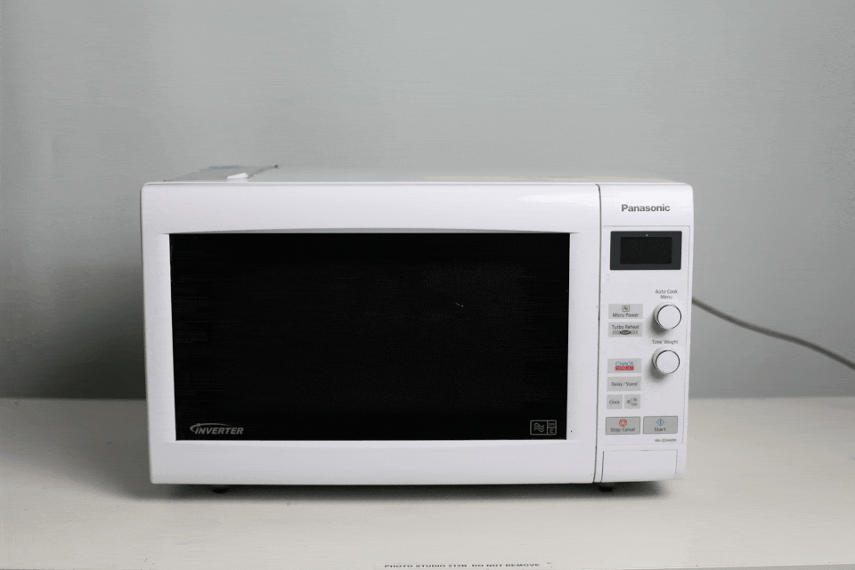
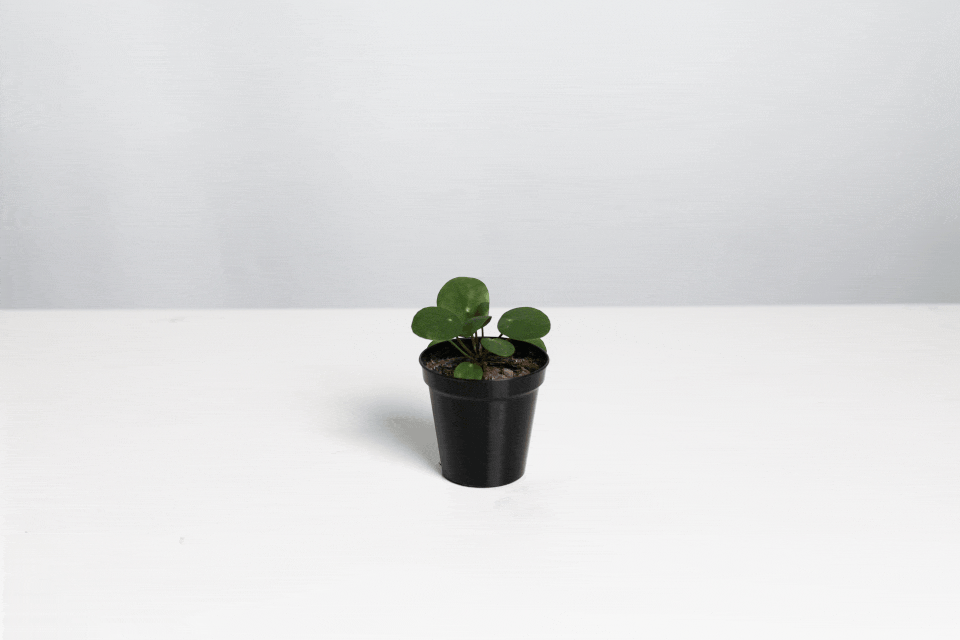
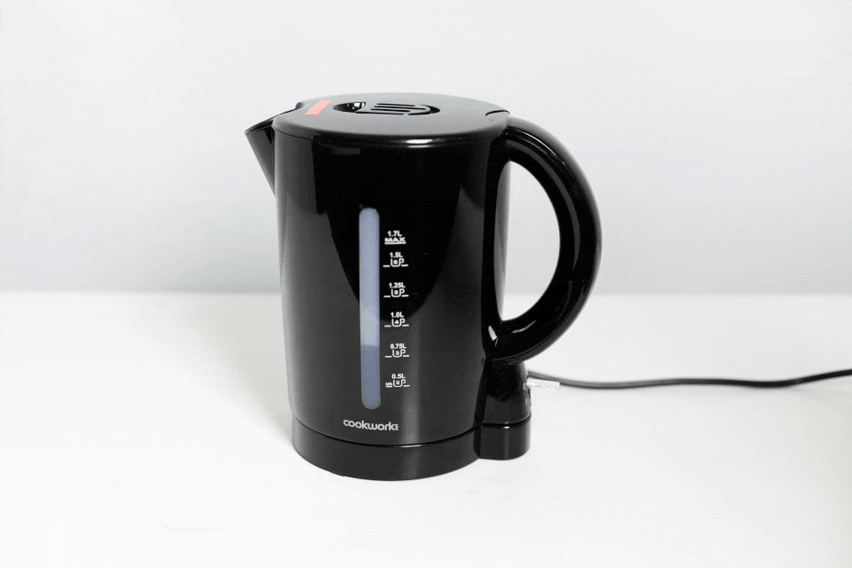
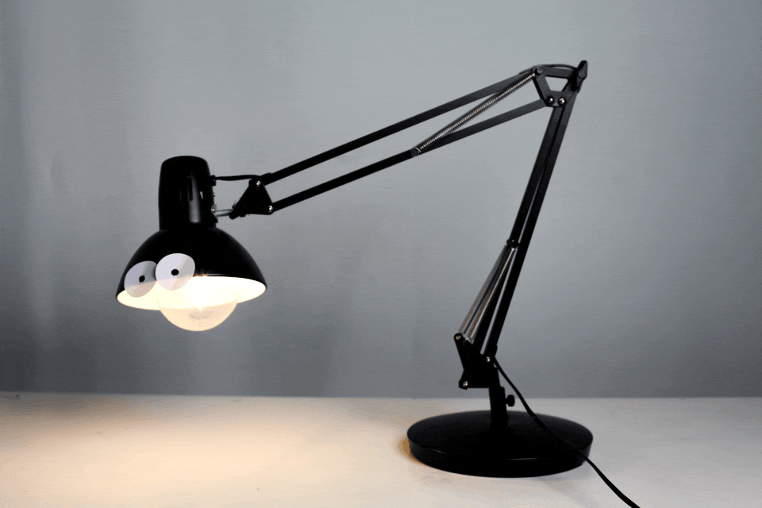

FIG.
Inconsiderate Domestic Objects
2026
// This page is still a WIP. //
To come:
- Crystalisation (Eye Contact Lamp)
- A Digital Approach
- Exhibiton Section
- Technical write up of app implementation
Inconsiderate Domestic Objects make us more considerate by using them. This series of tools encourage emotional reflection through friction. Highlighting the ways in which domestic technologies are optimised for functions rather than humanness. The project encourages more poetic modes of habitation, helping people recognise and expel mathematical efficiency from their pockets, countertops and bedside tables. The project aims to enable new emotional behaviours, and enrich our imaginations.

FIG.

FIG.
Goal
To create interaction which counters the intuitiveness of technology, in order to highlight convenience and efficiency as problematic singular goals to optimise for.

FIG.

FIG.

FIG.

FIG.
Manifesto: Inconsiderate Objects
1) There are other ways of designing the experienceable world apart from efficiently
2) A need for new interaction vocabulary with common objects
3) Avoid the danger of being relieved of needing to develop skill in light of technology
Process
1) Identify a common domestic object
FIG.

FIG.
2) Break the 'dream' of the object, by playing with its intuitive functionality
3) Sketch a new interaction for the object, which prioritises a social human emotion

FIG.

FIG.
4) Prototype the new object

FIG.

FIG.

FIG.

FIG.

FIG.

FIG.
Crystallisation (Eye Contact Lamp)
Refining the animation prototype into a physical artefact widened the view into the essence of the project.
FIG.
FIG.
A Digital Approach
In order to maximise the use out of the needed cameras to make many of the proposals work, I decided to focus solely on the relationship (gestures) we have with our technology (appliances).
Open source and lightweight image recognition software enable a new way of interacting with commonly baked in sensors and cameras. Appealing to the second tenet of the manifesto, cameras enable us to use our bodies as switches, rather than for switches.

FIG.
FIG.
MAKE A SUBMISSION:
Inconsiderate objects are simple, ask yourself:
[1] How can I design this to not be efficient or convenient to use?
[2] What about the interaction can I change or add to this object?
[3] What distinctly human skill can I practice when I use this object?
If you have something that fulfills all of those questions, submit them below!
What happens with submissions?
Once enough have been gathered and prototyped, a pitch will be made for the objects to be funded, constructed, and exhibited.